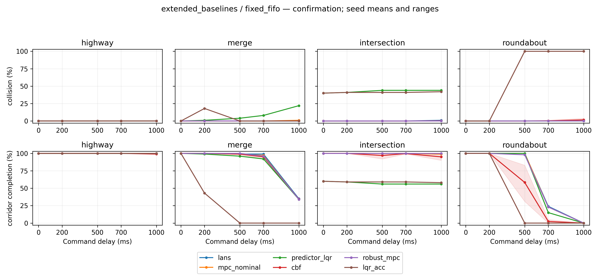
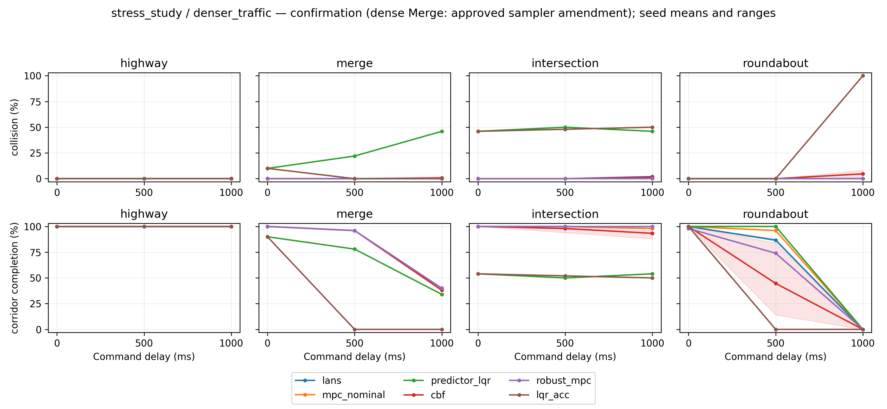
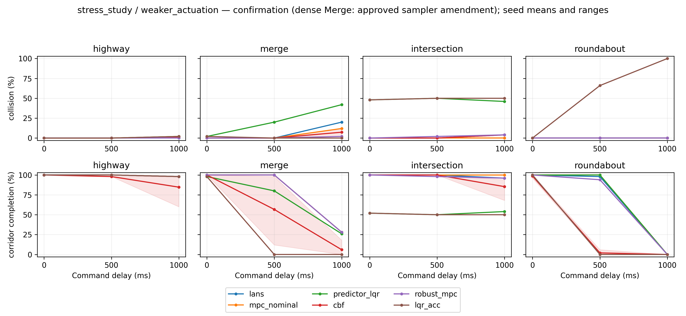
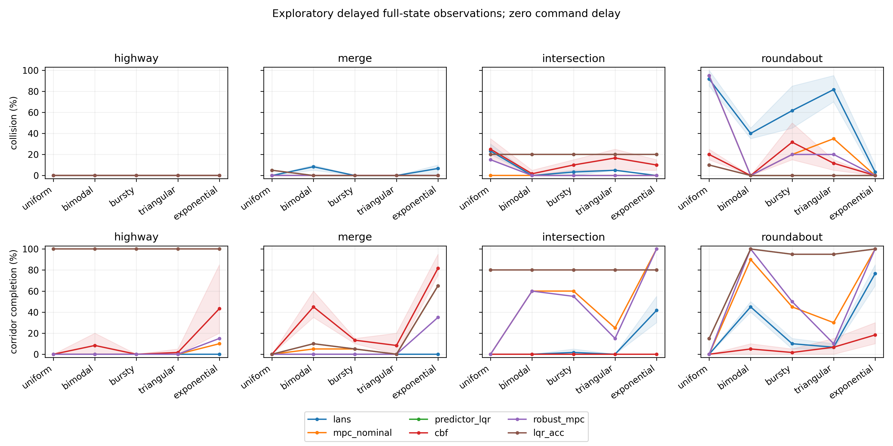
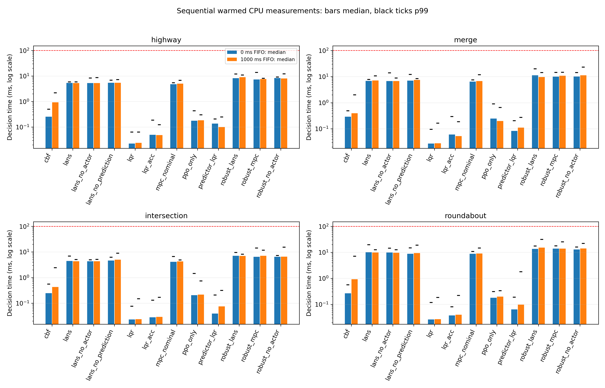

LANS-RISK — final verified results with approved initialization amendment
Prepared 2026-10-23T14:47:11.660370+08:00 (Asia/Shanghai).
All required experimental conditions are complete under the user-approved amended plan. The main confirmation uses the unchanged original protocol. Robustness comprises 231 original conditions plus 33 separately labelled dense-Merge conditions with an approved initialization-attempt cap of 200,000 instead of 10,000. The original unamended robustness stage remains 231/264; this report does not relabel amended results as original-frozen results.
| Stage | Verified conditions | Verified records/samples | State |
|---|
| Main confirmation | 440/440 | 44,000 | Complete; all 261 original batches unchanged |
| Robustness | 264/264 | 13,200 | 231 original + 33 approved sampler-amended conditions |
| Observation-delay evaluation | 200/200 | 4,000 | Complete; exploratory |
| Sequential runtime | 96/96 | 4,800 timed calls | Complete |
| Development | 240/240 | 4,800 | Re-audited |
The main/robustness/sensor deliveries contain 61,200 verified episode records; adding development gives 66,000. The 176 archived smoke checks and older studies are separate. Repeated methods and actor seeds share paired traffic cases; these totals are not counts of independent traffic samples.
Main LANS-versus-MPC finding
All three frozen LANS actors and the matched nominal MPC baseline have the same observed contiguous passing command-delay thresholds: 1,000 ms on Highway, 700 ms on Merge, 1,000 ms on Intersection, and 500 ms on Roundabout. LANS did not improve this delay-threshold endpoint. Identical observed thresholds do not establish statistical equivalence or equal tracking/safety behavior. The 1,000 ms entries are right-censored at the largest tested delay.
The empirical criterion is collision<=1% and corridor completion>=90% at every lower tested delay on the 0/200/500/700/1,000 ms grid. It is not a certified delay bound or proof that true collision risk is<=1%; even 0/100 collisions has a Wilson 95% upper bound of about 3.7%. Cold-FIFO startup may constrain the endpoint before feedback takes effect.
At 1,000 ms, LANS entries below are descriptive means across actors 42/43/44; MPC is run once on the same 100 traffic cases. Per-seed intervals, sample SDs and paired tests are in the CSVs.
| Scenario | LANS collision % | MPC collision % | LANS corridor % | MPC corridor % | LANS RMSE m | MPC RMSE m |
|---|
| highway | 0.00 | 0.00 | 100.00 | 100.00 | 0.0798 | 0.0254 |
| merge | 0.00 | 1.00 | 35.00 | 34.00 | 0.3781 | 0.4162 |
| intersection | 1.00 | 0.00 | 99.00 | 99.00 | 0.0427 | 0.0309 |
| roundabout | 0.00 | 0.00 | 0.00 | 0.00 | 0.9274 | 0.9391 |
Tracking differences are condition-specific: at this endpoint MPC has lower mean RMSE on Highway/Intersection, while LANS has lower mean RMSE on Merge/Roundabout. Both methods fail the corridor criterion at 1,000 ms on Merge/Roundabout. Interpret RMSE jointly with safety and completion, especially when collisions shorten episodes. No universal LANS superiority claim is supported.
The nominal comparison shares plant, information access, physical FIFO, action limits, reference-speed ceiling, acceleration-aware predictor, 30-step prediction horizon and 3 × 192 candidate budget. Objectives, trajectory ranking, actor use and retention/warm starts differ; equal candidate counts do not prove equal compute. The finite-scenario robust comparator is a generic three-scenario sampled planner, not certified tube MPC. All 12 controllers and planned ablation contrasts are retained. PPO-only removes a supervisor bundle; it does not isolate one safety mechanism.
Approved dense-Merge amendment and completed robustness
The original dense-Merge initializer exhausted its 10,000-attempt rejection budget for 15 of the 50 fixed traffic seeds 161000–161049. This was an initialization failure, not a controller collision. The user explicitly approved a separate study raising only that limit to 200,000. The exact approval record, one-line patch, original/candidate hashes, preflight and execution logs are in operations/.
All 33 dense-Merge conditions have now completed on all 50 prescribed traffic seeds, producing 1,650 verified episode records. The candidate benchmark differs by exactly one cap substitution. All 35 initial states that succeeded under the original cap were exactly preserved in preflight; all 50 amended initializations passed the original collision-free acceptance predicate. Seeds, density, physical dynamics, controller algorithms, frozen models, prediction/candidate budgets and episode counts were preserved. No case was removed or replaced. An additional diagnostic regression check matched nine paired initializations and 180 step transitions exactly across three delays for original-accepted cases, and checked both scope guards; these are software checks, not additional research evidence. The amendment uses a separate directory and source fingerprint; all 231 original robustness conditions and the original frozen source files remain unchanged.
The completed robustness analysis combines the 231 original conditions with these 33 amended conditions, labels source_version in machine-readable tables, and recalculates Holm corrections over the entire completed robustness contrast family. Do not describe the combined study as wholly conducted under the original unamended freeze. The amendment was selected after a setup failure; interpretation should disclose that timing and its limited scope.
Dense-Merge results below use the same 50 traffic cases for every controller. LANS values are descriptive actor-seed means, not pooled independent samples; per-actor intervals and paired tests are provided separately.
| FIFO ms | LANS collision % | MPC collision % | LANS corridor % | MPC corridor % | LANS RMSE m | MPC RMSE m |
|---|
| 0 | 0.00 | 0.00 | 100.00 | 100.00 | 0.0873 | 0.0244 |
| 500 | 0.00 | 0.00 | 96.00 | 96.00 | 0.1340 | 0.0867 |
| 1000 | 0.00 | 0.00 | 40.00 | 40.00 | 0.4272 | 0.3896 |
LANS and nominal MPC have equal observed collision and corridor-completion rates at these three delays; equal rates do not prove equivalence. Nominal MPC has lower descriptive mean RMSE at every tested delay. All nine per-actor/delay RMSE comparisons have positive LANS-minus-MPC paired mean differences and Holm-adjusted p<0.05 (largest adjusted p=0.0332, correction over all 1,824 robustness tests). These signed-rank results have the assumptions and limitations documented in STATISTICAL_METHODS.md.
These outcomes are finite-sample synthetic stress tests. They do not establish safety certification, general robustness, or a universal controller ranking. All other robustness results, including losses, are retained in stress_study/.
Observation delay and timing
The completed exploratory observation study uses five synthetic packet-delay profiles, four scenarios and 20 fresh cases per condition, with zero physical command delay. Initial state is known; subsequent full-state observations can be stale. It is not a DAROM reproduction or a learned delay-encoder evaluation. The reported figures retain all failures and seed variation. Do not equate a 2 s packet-delay bound with fixed 2 s command-delay tolerance.
Runtime uses the unchanged original profiling loop:20 warmup then 50 timed calls per scenario/controller at 0/1,000 ms FIFO, actor 42 where needed. A separate helper retains the post-loop timing array; all 4,800 samples and original median/p95/p99/max/exceedance statistics were independently checked. Mean/sample SD are provided. Samples span evolving states and resets; no independent-replicate CI, WCET bound or real-time guarantee is inferred. Main confirmation timing spans original and resumed execution sessions and is diagnostic only.
Metrics, statistical methods and recording limitations
Binary outcomes have per-condition Wilson 95% intervals; non-timing continuous outcome means and paired differences use 5000 deterministic traffic-case bootstrap draws. Tables give sample SD, observed extrema and quantiles. Exact paired-discordance tests cover binary outcomes; RMSE uses two-sided Wilcoxon signed-rank with documented assumptions. Holm correction covers all listed contrasts/outcomes within each completed study. No actor-seed pooling is used for inference; bootstrap intervals are marginal, not simultaneous. Zero-discordance bootstrap intervals do not prove equivalence. Additional inherited analyses use their recorded bootstrap seeds and contrast families; use results/ as the authoritative new analysis. See STATISTICAL_METHODS.md.
The raw no_feasible_steps field is meaningful only for the logged CBF and sampled-plan variants. MPC nominal/PPO/LQR methods have no such measured flag and predictor LQR hardcodes it false. Their default/fixed zeros are marked unavailable in processed tables, with raw episode count retained. Logged flag definitions differ between CBF and candidate planners, so cross-method solver-feasibility rankings are unsupported.
Observation-delay raw records do not contain RMSE. Full per-step state/action/error trajectories were not stored, so per-episode RMSE and event flags are checked against frozen computation logic while saved outcome aggregates are independently recomputed. Unrecorded near-miss/clearance/jerk/energy quantities are not invented. Episode length can vary after collision. Scientific claims are limited to this synthetic, finite-horizon disc-vehicle benchmark and these fixed actors/cases. No formal safety or real-vehicle guarantee follows.
Integrity, recovery and package contents
The GitHub backup ref matched commit d306a7bea4c4f7399cc91c9e4891055bc47bd04b. All 8 archive chunks, the whole archive SHA 256/CRC and every snapshot-manifest file passed verification before extraction. All 261 original batches remain byte-for-byte unchanged. Every completed current condition has a valid raw/metadata pair, exact expected traffic seeds and unique composite condition/episode keys; saved outcome aggregates were recomputed. All 12 frozen actors have the expected embedded training seeds and distinct policy-tensor content. Thirteen semantic preflight tests passed. See the independent AUDIT_*.json, MODEL_SEED_AUDIT.json and SMOKE_AUDIT.json files.
848 original code/protocol/freeze/model artifacts were rechecked against the initial snapshot manifest. No frozen source/model file was changed. The main runner executed only 179 missing batches; valid original batches returned cached results.
Previous interruption evidence supports process-environment replacement, but the platform cause is not established. This run used four single-thread workers, process locking, persistent exit/stage logs and verified incremental GitHub checkpoints on backup/recovery-remaining-20261022T102500Z. The original backup branch and visibility settings were not modified. No paid infrastructure was acquired. No exposed control guarantees a non-preemptible machine; remote data verification and resumable complete-pair checkpoints mitigate loss. The final blocked subset was resolved by the approved initialization-only amendment; the original exception is preserved in the logs.
The ZIP contains the complete restored project, raw/processed results, all frozen code/configurations/models/checkpoints, historical studies/manuscript drafts, logs, vector PDF/300 dpi PNG figures, per-seed PDF/LaTeX tables, captions, independent audits and reproduction/recovery tools. Historical files may describe earlier stages; this report and STUDY_COMPLETENESS.json govern current claims. Original Git internals, virtual environments and regenerable caches are excluded and documented. The earlier 20,000-record study and five-paper author-reported literature comparison are separate; exact paper-specific vehicle reproductions are outside the archived agreed required scope. No new citation or cross-paper numerical winner is invented.
ARIS integration and review status
A pinned MIT-licensed ARIS Codex skill pack and LANS-RISK adapter are included. ARIS integration does not supply compute or make an independent scientific verdict. The final validation uses a separate deterministic implementation to recompute descriptive statistics, paired tests, Holm adjustments, coverage, seed identities and evidence hashes. No external-model peer review was run or claimed. Preserved historical files contain earlier blocked states; the final results/ report, completeness record and audit are authoritative.
Selected figures and publication tables
Full captions are in FIGURE_CAPTIONS.md. Lines and shaded ranges summarize actor seeds; shading is not a confidence interval.

Main confirmation · click for vector PDF
Denser traffic — dense Merge uses the approved amendment · click for vector PDF
Weaker actuation · click for vector PDF
Observation delay · click for vector PDF
Runtime diagnostics · click for vector PDFPer-seed tables: Main · Robustness · Observation